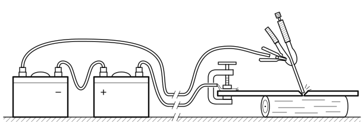

Quatre tomes, 89 chapitres sur la conservation des aliments, la subsistance et l’autonomie, faits pour la Côte-Nord : forêt boréale, hivers à −35 °C, saison de jardin de 90 à 100 jours, orignal, truite, fleuve salé.
Le test de chaque page : il n’y a personne à appeler.
